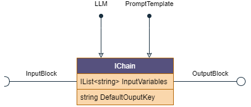

Key Concepts
Chain architecture is a programming approach that is gaining popularity due to its effectiveness in managing complex systems with multiple interconnected components. It involves breaking down a larger system into smaller, more manageable parts, and then connecting them through a series of models known as chains.
Each chain processes a specific task and passes its output to the next chain, forming a continuous flow of data throughout the system. In this article, we will explore some of the key concepts of chain architecture.
Chain architecture
Chains are based on TPL.Dataflow, a programming library that helps manage multiple tasks that need to communicate with each other asynchronously, and it uses a dataflow model to promote actor-based programming.
/// <summary>
/// Basic interface for a chain
/// </summary>
public interface IChain : IChain<ChainMessage, ChainMessage>
{
/// <summary>
/// Input block
/// </summary>
ITargetBlock<ChainMessage> InputBlock { get; }
/// <summary>
/// Output block
/// </summary>
ISourceBlock<ChainMessage> OutputBlock { get; }
/// <summary>
/// List of inputs chain require to run
/// </summary>
IList<string> InputVariables { get; }
/// <summary>
/// Output chain produces
/// </summary>
string DefaultOutputKey { get; set; }
}
Most of the chains implementation wrap Dataflow primitives (called components) to make it more conviniet to use.
Every IChain implementation has a InputBlock and OutputBlock properties which is used to connects chains between each other, as well as your Dataflow components.

To clarify, when we talk about linking chains together, we're essentially connecting inputs to outputs.
To better organize this process, a chain can consume several variables that are listed in InputVariables,
and it should produce a single result that is named DefaultOutputKey.
A chain is a sequence of models that transmit a message ChainMessage between them.
This message contains a dictionary of values, and each model within the chain can consume or modify values as needed.
The ChainMessage may also contain stops for LLMs and has a unique identifier Id that must be passed throughout the entire chain.
/// <summary>
/// Message that goes through chains
/// </summary>
/// <param name="Values"></param>
/// <param name="Stops"></param>
public record ChainMessage(IDictionary<string, string> Values, IList<string> Stops = null)
{
public Guid Id { get; set; } = Guid.NewGuid();
}
ChainMessage also could have Stops for LLMs and has a unique Id that should be passed through entire chain.
Chain executor
Chains are built to work on background, efficiently utilize resources and be scaled on demand. But sometimes you might want to execute chain and get a result
immideatly. For that reason there is IChainExecutor iterface exists, which is currently implemented as OneShotChainExecutor.
It is great for example if you need get chain result as a response to REST request or cloud function call.
var llmChain = new ModelChain(prompt, llm);
var executor = new OneShotChainExecutor(llmChain);
var answer = await executor.PromptAsync(question);